Apply functions with purrr
purrr package
The purrr package makes it easy to work with lists and functions. This cheatsheet will remind you how to manipulate lists with purrr as well as how to apply functions iteratively to each element of a list or vector. The back of the cheatsheet explains how to work with list-columns. With list columns, you can use a simple data frame to organize any collection of objects in R.
Apply Functions
Map functions apply a function iteratively to each element of a list or vector.
- map(.x, .f, …) : Apply a function to each element of a list or vector.
x = c(TRUE,TRUE,FALSE)
map(x, is.logical)
- map2(.x, ,y, .f, …): Apply a function to pairs of elements from two lists, vectors.
map2(x, y, sum)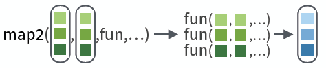
- pmap(.l, .f, …) Apply a function to groups of elements from list of lists, vectors.
pmap(list(x, y, z), sum, na.rm = TRUE)
- invoke_map(.f, .x = list(NULL), …, .env=NULL) Run each function in a list. Also invoke.
l <- list(var, sd);
invoke_map(l, x = 1:9)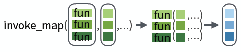
lmap(.x, .f, …) Apply function to each list-element of a list or vector.
imap(.x, .f, …) Apply .f to each element of a list or vector and its index.
OUTPUT
map(), map2(), pmap(), imap and invoke_map each return a list. Use a suffixed version to return the results as a specific type of flat vector, e.g. map2_chr, pmap_lgl, etc.
Use walk, walk2, and pwalk to trigger side effects. Each return its input invisibly.
| function | returns |
|---|---|
| map | list |
| map_chr | character vector |
| map_dbl | double (numeric) vector |
| map_dfc | data frame (column bind) |
| map_dfr | data frame (row bind) |
| map_int | integer vector |
| map_lgl | logical vector |
| walk | triggers side effects, returns the input invisibly |
SHORTCUTS - within a purrr function:
- “name” becomes function(x) x[[“name”]],
- e.g. map(l, “a”) extracts a from each element of l
- ~ .x becomes function(x) x,
- e.g. map(l, ~ 2 +.x) becomes map(l, function(x) 2 + x )
- ~ .x .y becomes function(.x, .y) .x .y,
- e.g. map2(l, p, ~ .x +.y ) becomes map2(l, p, function(l, p) l + p )
- ~ ..1 ..2 etc becomes function(..1, ..2, etc) ..1 ..2 etc,
- e.g. pmap(list(a, b, c), ~ ..3 + ..1 - ..2) becomes pmap(list(a, b, c), function(a, b, c) c + a - b)
Work with Lists
FILTER LISTS
- pluck(.x, …, .default=NULL) : Select an element by name or index, pluck(x,“b”) ,or its attribute with attr_getter.
pluck(x,"b",attr_getter("n"))
- keep(.x, .p, …) : Select elements that pass a logical test.
keep(x, is.na)
- discard(.x, .p, …) Select elements that do not pass a logical test.
discard(x, is.na)
- compact(.x, .p = identity) Drop empty elements.
compact(x)
- head_while(.x, .p, …) Return head elements until one does not pass. Also tail_while.
head_while(x, is.character)
SUMMARISE LISTS
- every(.x, .p, …) Do all elements pass a test?
every(x, is.character)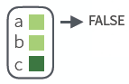
- some(.x, .p, …) Do some elements pass a test?
some(x, is.character)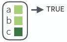
- has_element(.x, .y) Does a list contain an element?
has_element(x, "foo")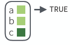
- detect(.x, .f, …, .right=FALSE, .p) Find first element to pass.
detect(x, is.character)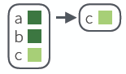
- detect_index(.x, .f, …, .right = FALSE, .p) Find index of first element to pass.
detect_index(x, is.character)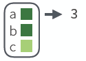
- vec_depth(x) Return depth(number of levels of indexes).
vec_depth(x)
TRANSFORM LISTS
- modify(.x, .f, …) Apply function to each element. Also map, map_chr, map_dbl, map_dfc, map_dfr, map_int,map_lgl.
modify(x, ~.+ 2)
- modify_at(.x, .at, .f, …) Apply function to elements by name or index. Also map_at.
modify_at(x, "b", ~.+ 2)
- modify_if(.x, .p, .f, …) Apply function to elements that pass a test. Also map_if.
modify_if(x, is.numeric,~.+2)
- modify_depth(.x,.depth,.f,…) Apply function to each element at a given level of a list.
modify_depth(x, 1, ~.+ 2)RESHAPE LISTS
- flatten(.x) Remove a level of indexes from a list. Also flatten_chr, flatten_dbl, flatten_dfc, flatten_dfr, flatten_int, flatten_lgl.
flatten(x)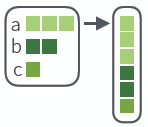
- transpose(.l, .names = NULL) Transposes the index order in a multi-level list.
transpose(x)
JOIN (TO) LISTS
- append(x, values, after = length(x)) Add to end of list.
append(x, list(d = 1))
- prepend(x, values, before =1) Add to start of list.
prepend(x, list(d = 1))
*splice(…) Combine objects into a list, storing S3 objects as sub-lists.
splice(x, y, "foo")
WORK WITH LISTS
- array_tree(array, margin = NULL) Turn array into list. Also array_branch.
array_tree(x, margin = 3)
- cross2(.x, .y, .filter = NULL) All combinations of .x and .y. Also cross, cross3, cross_df.
cross2(1:3, 4:6)
- set_names(x, nm = x) Set the names of a vector/list directly or with a function.
set_names(x, c("p", "q", "r"))
set_names(x, tolower)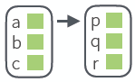
Reduce Lists
- reduce(.x, .f, …, .init) Apply function recursively to each element of a list or vector. Also reduce_right, reduce2, reduce2_right.
reduce(x, sum)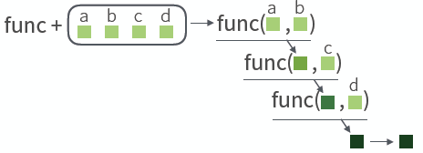
- accumulate(.x, .f, …, .init) Reduce, but also return intermediate results. Also accumulate_right.
accumulate(x, sum)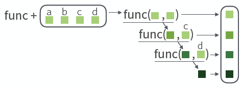
Modify function behavior
compose() Compose multiple functions.
lift() Change the type of input a function takes. Also lift_dl, lift_dv, lift_ld, lift_lv, lift_vd, lift_vl.
rerun() Rerun expression n times.
negate() Negate a predicate function (a pipe friendly !)
partial() Create a version of a function that has some args preset to values.
safely() Modify func to return list of results and errors.
quietly() Modify function to return list of results, output, messages, warnings.
possibly() Modify function to return default value whenever an error occurs (instead of error).